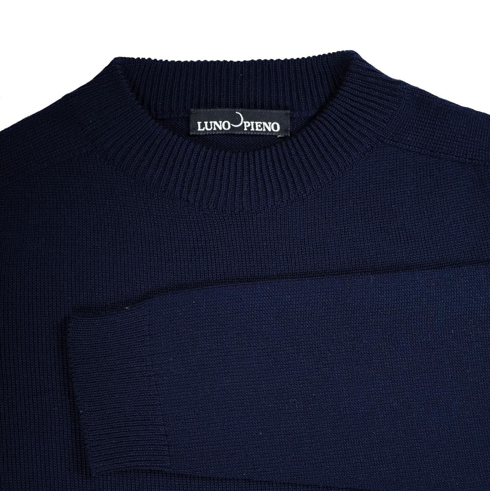
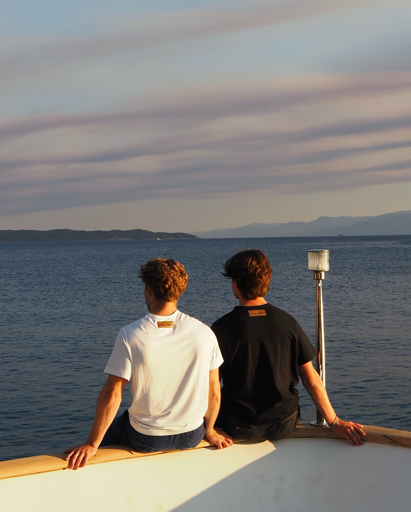
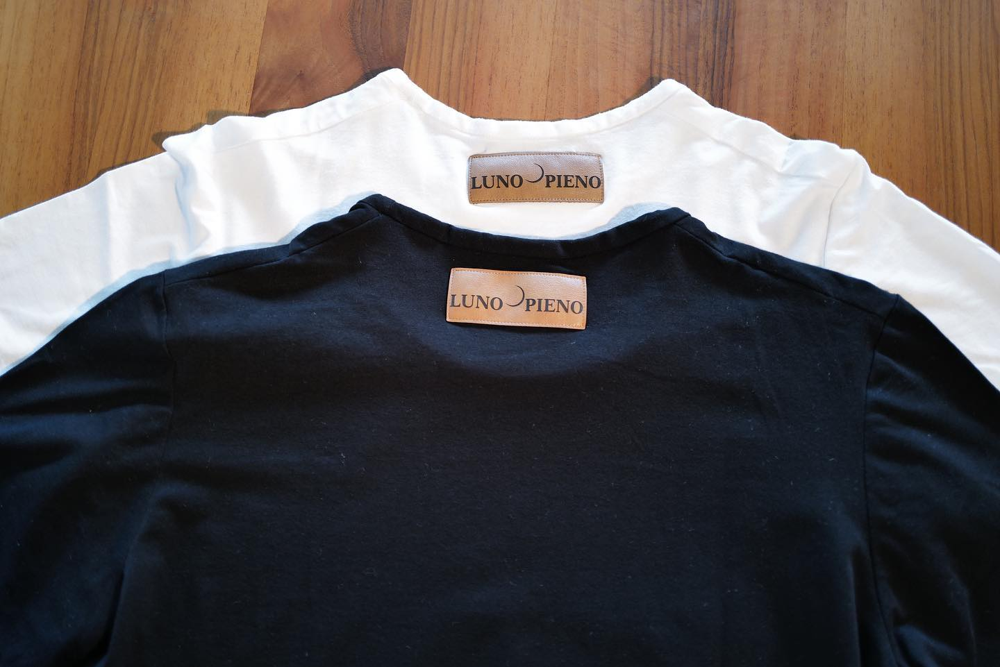
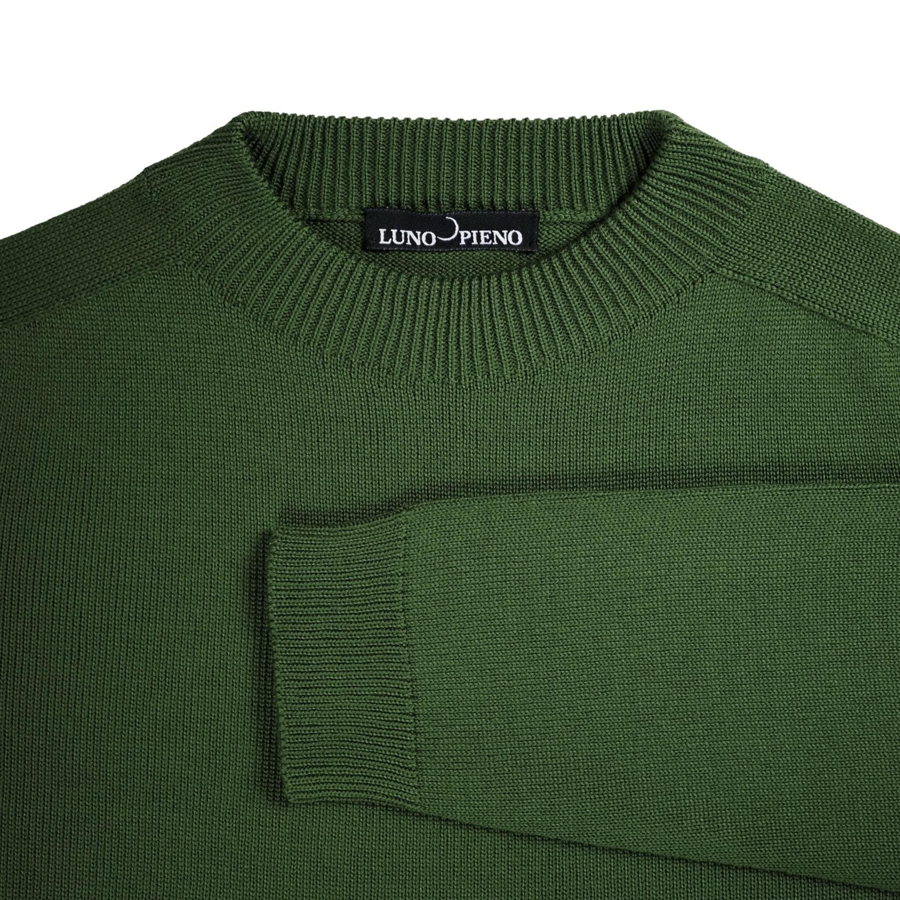
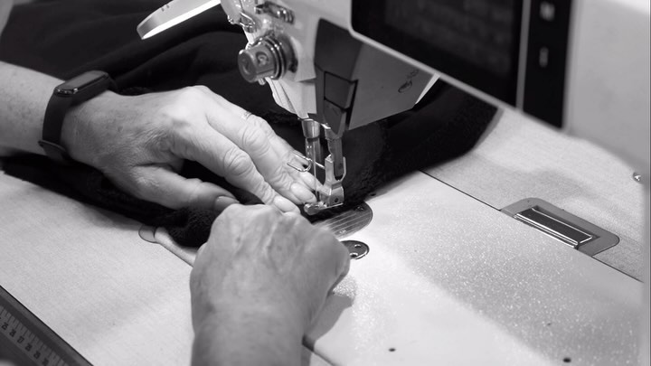
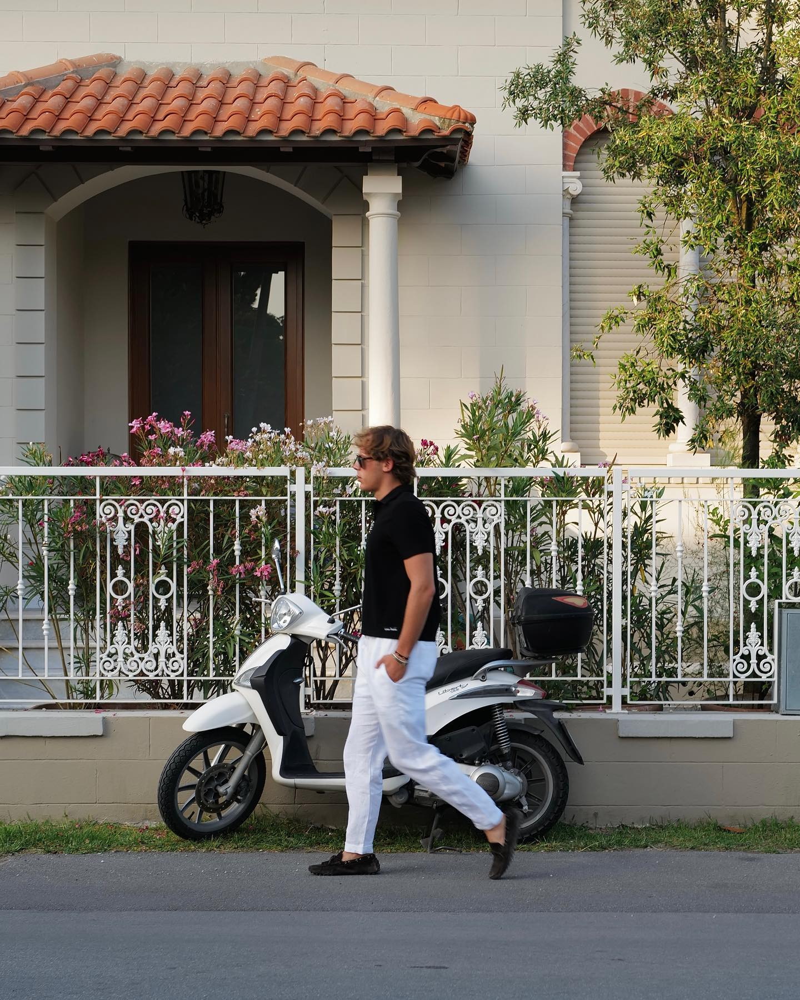
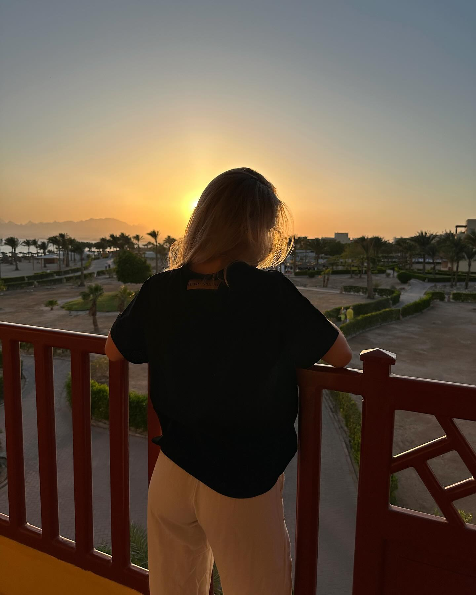
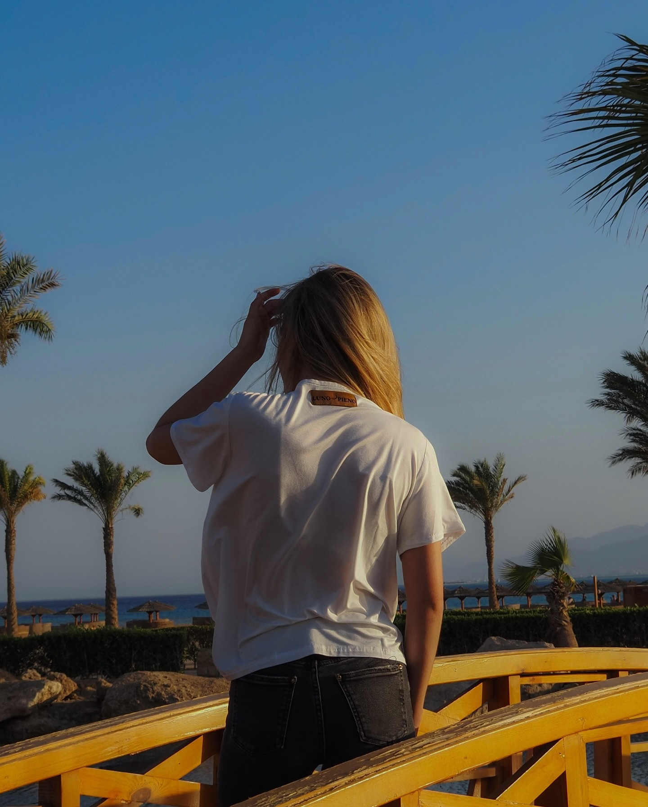
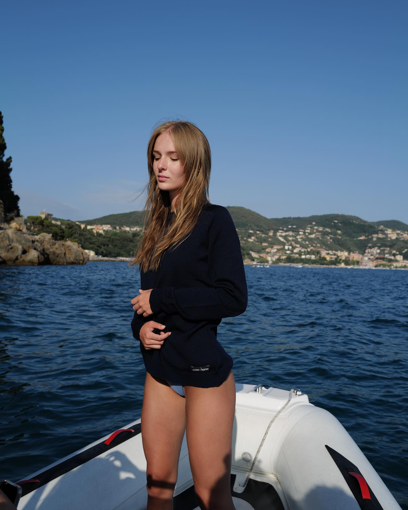

01
01Mediterranean study
Permanent collection / 2025
Made for
a life in motion.
Swiss-made essentials with a Mediterranean state of mind. Quietly precise, instinctively easy.
Designed in SwitzerlandMade between Switzerland & Portugal
Swiss precisionPortuguese craftMediterranean spiritUnisex by design
Chapter I / The permanent edit
Three pieces.
Endless departures.
Built as a small, exact wardrobe: tactile merino, weighty cotton and considered proportions that travel easily.

02
03Chapter II / Made close to home
The luxury
of knowing how.
Fewer pieces. Better materials. Makers we know. Knitwear is developed in Switzerland; cotton essentials are cut and finished by experienced hands in northern Portugal.
Discover our making

01 / Riviera
Days without plans.

02 / After light
The long way home.

03 / Worn well
One piece, her way.

The LUNO PIENO point of view
Precision,
without stiffness.
Clothes should make room for living. Our pieces move between mountains and coastlines, dinners and departures, becoming more personal with every wear.
Read our story